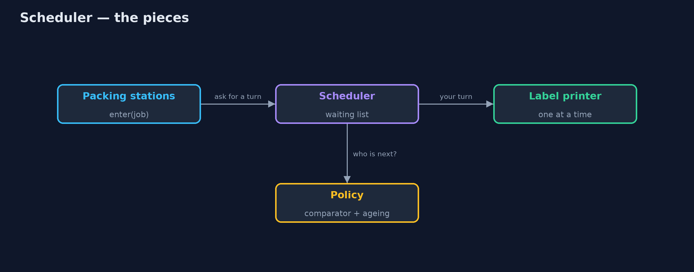
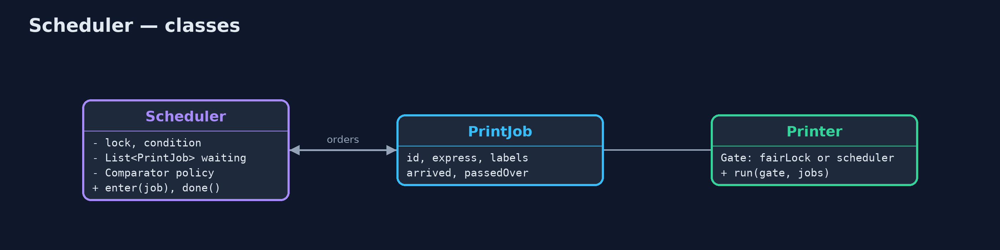
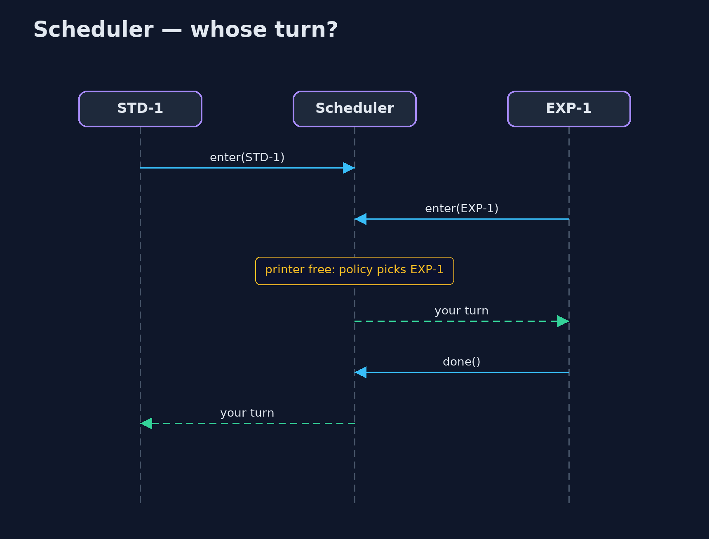

Scheduler Pattern
src/main/java/com/jk/explore/scheduler/
├── PrintJob.java A label to print: its order, whether it is express, and how many labels it has
├── Printer.java The warehouse's one label printer, and packing stations that each send it one job, a little apart
├── Scheduler.java The pattern: threads ask the scheduler for their turn at a shared resource, and a replaceable policy decides whose turn is next
└── SchedulerDemo.java The five acts: a fair lock, an express-first scheduler, a different policy, no job waits for ever, and the billWhen threads queue for one shared resource, let a scheduler with a replaceable policy decide whose turn is next, instead of whoever happens to grab the lock.
Scheduler is a concurrency pattern for a shared resource that only one thread can use at a time, when the order of use matters. Each thread asks the scheduler for its turn and waits. When the resource becomes free, the scheduler's policy (express first, smallest first, oldest first) picks which waiting thread goes next.
The policy lives in one place and can be swapped without touching the threads or the resource. Because priority rules can leave some threads waiting for ever, a good scheduler also ages long-waiting requests so everyone is served eventually.
The idea in everyday terms
Think of the triage nurse in a hospital's emergency department. Patients are not seen in the order they walked in. The nurse decides who goes next, by how urgent each case is. And a patient with a sprained wrist who has watched ten urgent cases go ahead is eventually moved up, so nobody waits all night.
The scenario
The online store's warehouse has one label printer shared by six packing stations. Express orders must catch the afternoon van. The printer was protected by a fair lock, which serves jobs in the order they arrived, so express labels waited behind every standard label that arrived first.
Run
./gradlew runThe demo tells the story in 5 acts, each printing exact numbers that the tests check:
| Act | What it shows |
|---|---|
| 1. A fair lock | Jobs print in arrival order: STD-1, STD-2, STD-3, then EXP-1, EXP-2, EXP-3; express waits behind every standard job. |
| 2. Express first | A scheduler with an express-first policy prints EXP-1, EXP-2, EXP-3, then STD-1, STD-2, STD-3. |
| 3. A replaceable policy | Swapping in smallest-first prints STD-2, EXP-2, STD-3, EXP-3, EXP-1, STD-1; nothing else changed. |
| 4. Nobody waits for ever | In an express rush, express-first prints STD-1 last; promoting after 3 passes prints it fourth. |
| 5. The bill | Every job takes the scheduler's lock, joins its list and is woken to check; every priority rule needs a starvation guard. |
Test
./gradlew test5 tests in DemoRunsTest, SchedulerTest. Every number the demo prints is asserted, and nothing depends on the clock, so every run gives the same result.
Technologies and versions
| Technology | Version | Used for |
|---|---|---|
| Java | 21 | the code (toolchain set in build.gradle) |
| Gradle | 9.2.1 (wrapper) | build and run, nothing to install |
| JUnit | 5.10.2 | the tests |
| videokit | repository tool | the narrated video and animation: Piper en_US-amy-medium, speed 0.8, longer pauses (the approved amy-slow voice) |
Learning Material
| Document | What it is for |
|---|---|
| Problem statement | the situation and what the project must show |
| Prerequisites | what you need to know first |
| Scheduler, explained | the acts in prose |
| Session guide | a one-hour lesson with exercises |
| Animated walkthrough | the acts step by step, narrated |
| Spec | what this project must be true of |
The pattern in one picture
Stations ask; the policy picks; the printer serves one at a time.

Where each piece sits
A lock, a condition, a list, and a comparator.

How the data moves
A job overtaken three times moves to the front.
Who calls whom, in order
Everyone waits; the policy picks one.

Video
video/scheduler-pattern-explained.mp4 (with .m4a audio and .srt subtitles) is built by video/build_video.sh. Rendered media is not committed.
What it costs
- Someone has to decide, every time. Each job takes the scheduler's lock, joins its list, and is woken to check whether it is next.
- Starvation. Express-first alone printed a standard job last during an express rush; ageing is needed to prevent it.
- One more moving part. The policy is simple to swap but easy to get subtly wrong.
When this is too much
When the order of use does not matter, a plain lock or a fair lock is simpler. And when work can be queued rather than waited for, a priority queue in front of a worker thread does the same job with less machinery.
Where you have already met this
- Operating system CPU schedulers and I/O schedulers.
PriorityBlockingQueuefeeding a worker thread.- Print queues, and job schedulers in build servers.
- Kubernetes pod priority and preemption.
Where this sits
This project is in concurrency-design-patterns, next to Monitor Object, which guards a resource without deciding the order, and Producer-Consumer.